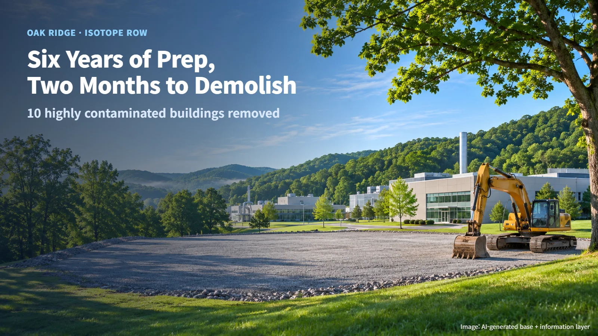
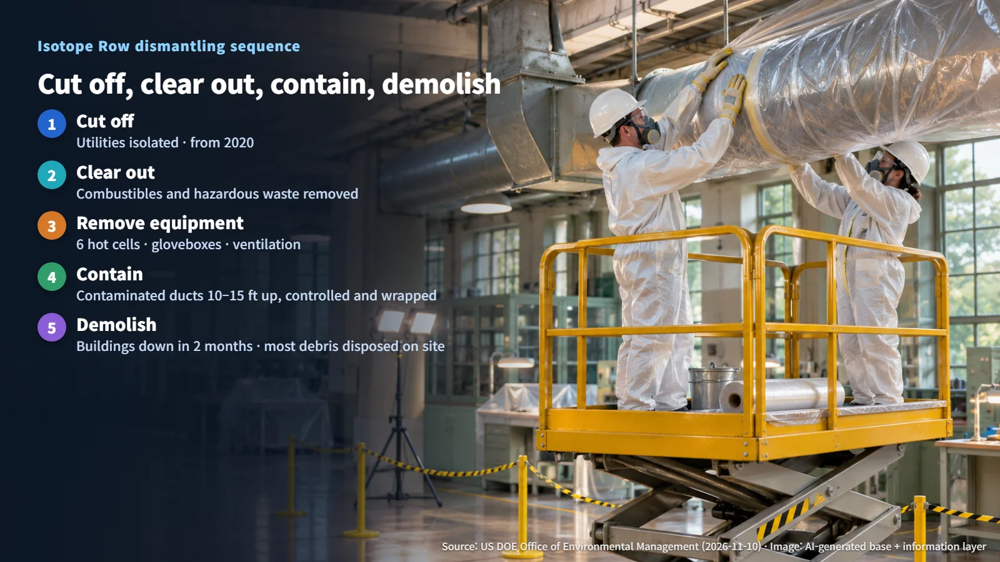
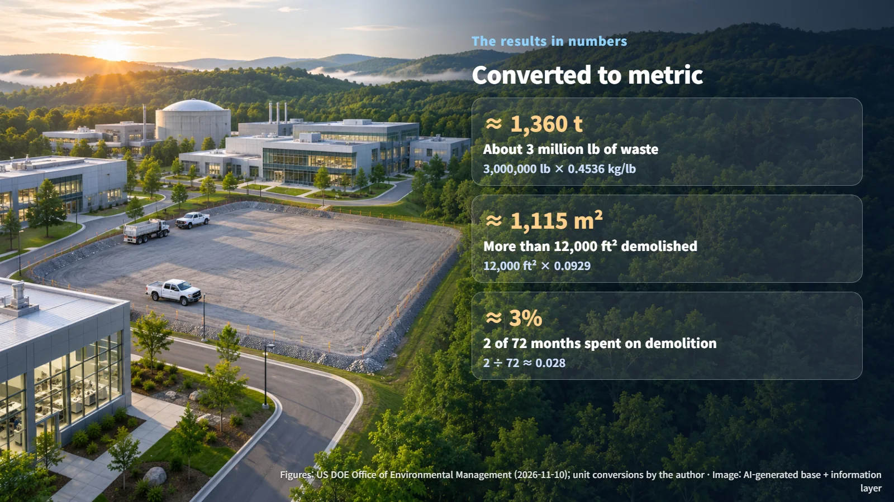

United States · Oak Ridge · Decommissioning
Six Years of Preparation, Two Months of Demolition: Taking Down Oak Ridge's Isotope Row
Ten highly contaminated buildings at ORNL's Isotope Row came down in two months, after six years of isolation, waste removal and decontamination.
Tell someone that a radioactively contaminated building is about to be torn down, and the first image that comes to mind is usually a cloud of dust carrying contamination off the site. The schedule of a project that just wrapped up in the United States tells a different story. Preparation and decontamination took 6 years, while knocking the buildings down took only 2 months. That split of time captures, almost on its own, how highly contaminated nuclear facilities are taken apart safely.
On 10 November, the US Department of Energy (DOE) announced that demolition of 10 highly contaminated buildings on "Isotope Row" at Oak Ridge National Laboratory (ORNL) is complete. The work was a 6-year risk-reduction project carried out by the Oak Ridge Office of Environmental Management and its contractor UCOR. It comes from the same Oak Ridge site covered in an earlier post on Oak Ridge's processing facility upgrade.

What Was Left Inside Isotope Row
As the name suggests, Isotope Row is a cluster of buildings that once produced and researched isotopes. The buildings went up between the late 1940s and the early 1960s and stopped operating in the early 1990s.
Inside, contaminated hot cells and gloveboxes remained. A hot cell is a room enclosed by thick shielding walls, where workers stand outside and use remote manipulators to handle highly radioactive material. A glovebox is a sealed box fitted with rubber gloves, so an operator can reach inside while the air within stays separate from the room. Both were places where radioactive material was handled directly, which makes them the kind of equipment where contamination tends to build up.
Mercury and asbestos were also left behind. Read as data, this makes Isotope Row a mixed-hazard site: radiation protection and the control of ordinary industrial hazardous materials had to happen at the same time, which tightens both the work sequence and the sorting of waste streams. Counting from the end of operations in the early 1990s to the start of preparation in 2020, the facility had stood idle for nearly 30 years.
Six Years of Work: Cut Off, Clear Out, Contain, Demolish
UCOR began work in 2020. The sequence can be summarized in five steps.
1. Cut off: Isolate utilities such as power and water from the buildings. 2. Clear out: Remove combustible materials and hazardous waste first. 3. Remove equipment: Take out 6 hot cells, contaminated gloveboxes and ventilation equipment. 4. Contain: Dismantle the contaminated process off-gas and ventilation ductwork running 10–15 feet above the floor, using controls and packaging designed to protect workers and prevent the spread of contamination. In metric terms, 10 × 0.3048 ≈ 3.0 m and 15 × 0.3048 ≈ 4.6 m, so the ductwork sat roughly 3.0–4.6 m overhead. 5. Demolish: Bring down the emptied buildings and dispose of most of the debris on site.
Each step sets up the next. Isolating utilities first means crews work in buildings with no live power lines or water feeds running through them. Removing combustibles and hazardous waste early lowers the fire load and leaves cleaner, clearer spaces for the heavier equipment work that follows. The overhead ductwork deserves its own step because process off-gas and ventilation lines carried air from contaminated work areas for years, so contamination can coat their interior surfaces; working at height on such lines calls for careful containment so that nothing is shaken loose into the surrounding air.
The key point is what this order changes. When the most heavily contaminated equipment and piping are removed and packaged one by one in the early steps, what remains at the end is a structure carrying far less contamination. The longer and more careful the early steps, the shorter and safer the final demolition. The contrast between 6 years and 2 months is a direct result of that principle. The demolition schedule was also adjusted to reduce the impact on the laboratory's ongoing work.

The Results in Numbers
Converting the announced figures into metric units makes them easier to picture.
- About 3 million pounds of waste: 3,000,000 lb × 0.4536 kg/lb ≈ 1,360,000 kg, which works out to about 1,360 tonnes.
- More than 12,000 square feet demolished: 12,000 ft² × 0.0929 m²/ft² ≈ 1,115 m², or a little over 1,100 m².
- Share of time: 6 years is 72 months, and building demolition took 2 of them. 2 ÷ 72 ≈ 0.028, or about 3%.
In other words, roughly 97% of the project's duration went into preparation, decontamination and waste handling. That ratio shows clearly where the time and cost of dismantling a highly contaminated facility actually go. Disposing of most of the debris on site, which cut transport costs, also shows the value of settling the waste pathway well before the first wall comes down.

With this announcement, demolition of all 10 buildings has reached completion. The next steps are preparing the remaining land, planning its reuse and continuing environmental management; specific timelines have not been made public. The real weight of dismantling a contaminated facility lies in the long preparation that comes before the dramatic demolition footage, which is worth keeping in mind the next time a nuclear decommissioning milestone makes the news.